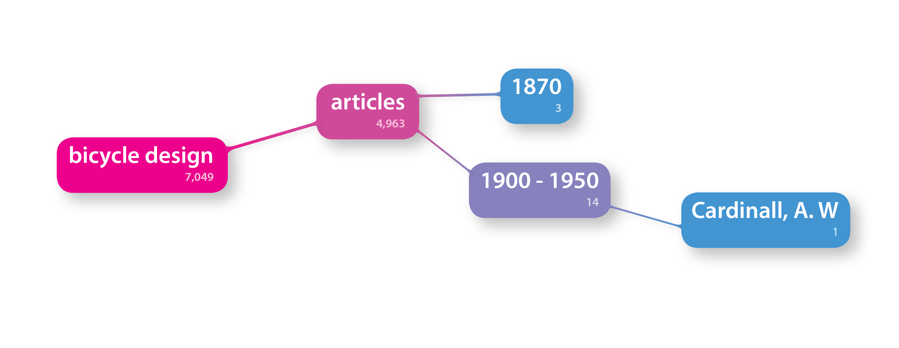

2015
Interaction design, a modular approach to searching - facilitating information search through Interaction Design. This project had it's inception during the Interaction Design course at the Industrial Design Intensive from UID, and ended winning an annual digital innovation call from a company in Umeå, competing with other projects from tech, business and design students.
The interaction design project at IDI aims to help the university library to accomplish its mission: "Facilitate reasearch and education at Umea University", by proposing redesigns to its website.
We sought to understand how the library mission was perceived by its users, dividing these into smaller groups: students and researches, as part of the academic community; and "teenage bookworms", that are not (yet) inside the university but might search books in its large catalog. After interviews with users from each group, we created personas to represent them.
Doesn't search books for fun. Searches for articles and books for making copies and for courses. Sometimes looks for a silent place to work on. Loans specific books listed in the course, but don't explore other types.
Do not use the library because it is too general, and instead of using the library search, uses a general search engine. Scans conferences to keep updated. Has to read a paper to realize its importance.
Heavy novel reader, no interest in scientific articles and technical books. Usually goes to nearby libraries, and rely on interlibrary loans. Meet friends at the library. Doesn't find problems in the search engin and never uses the advanced search. Finds books by searching their exact title, browsing the shelves or in related categories at the website.
Partnering with the librarians, a workshop was arranged with primary school children seeking to find inspiration on how they would catalog and classify information (represented by different objects laid on the floor).
The research phase brought the key insight that users interact with the library website in different ways, and to appeal to them, the library website had to manage to accomodate the different possible mindsets. Three alternatives of redesigns for the library website were proposed:
An overhaul of the website focusing on making the navigation of its internal categories easier to understand, through a tree-like interface.
An overhaul of the website focusing on making the navigation of its internal categories easier to understand, through a tree-like interface.
An alternative search interface for the catalog, using Venn diagrams to intersect interest areas and explore new books.
From these alternatives, we found that the most impactful on accomplishing the library mission would be the redesign of its overall most-used feature: the search engine. The Venn diagram approach, however, could not be used due to it's restriction to three intersecting sets, using perfect circles. Therefore, we retinkered the idea based on the tree-like navigation design of alternative 1.
With the new concept under development, Lo-fi mockups of the interface were printed and presented to potential users, to simulate the searching experience.
A modular search interface that expands according to the users will to refine it. It accounts for the multiple ways different users might want to build their own search: whether searching for the title exactly, creating personalized search feeds of specific interest areas or allowing exploration through keyword suggestion. Relying only on current databases and supported boolean algebra, it helps the user create searches iteratively, permitting the bypass of filtering steps to check the effect a certain filter has on the final search, while reducing greatly the number of page transfers with an in loco refreshing interface.
This project started during IDI, where I worked together with Victor Muñoz and Melina Hozhabri. After the the final concept was presented to the university librarians, and the IDI project was over, our team parted ways and I kept working solo on the graphic presentation and logic of the system to enter the Remus Technologies (now Fort Knox) Innovation Call. Having won it, I worked two more months developing a blueprint for the interface and guiding the development of a digital prototyped with a hired programmer. With this shipped, the intellectual rights to the project are now owned by the company, through a royalties contract.